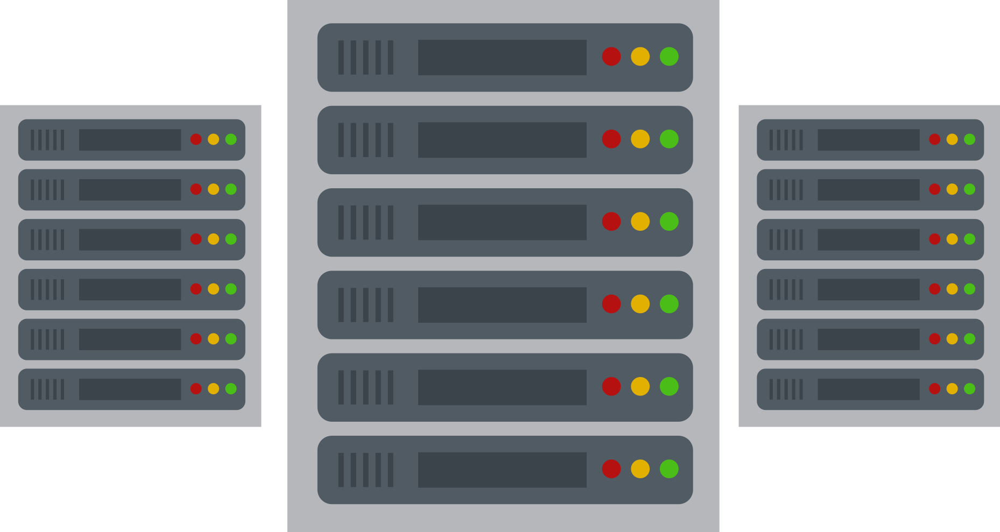
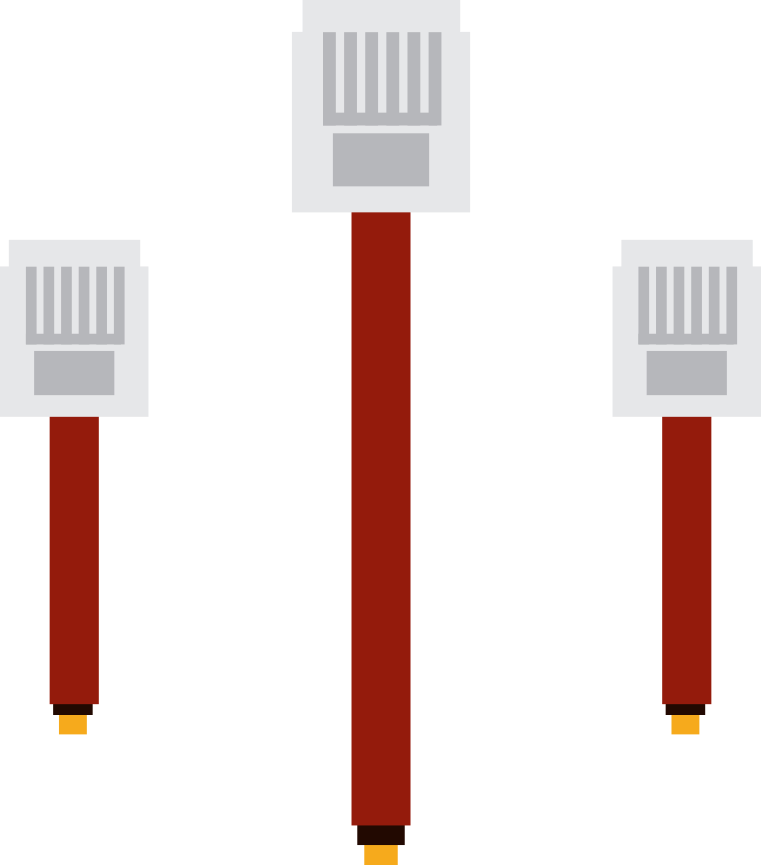
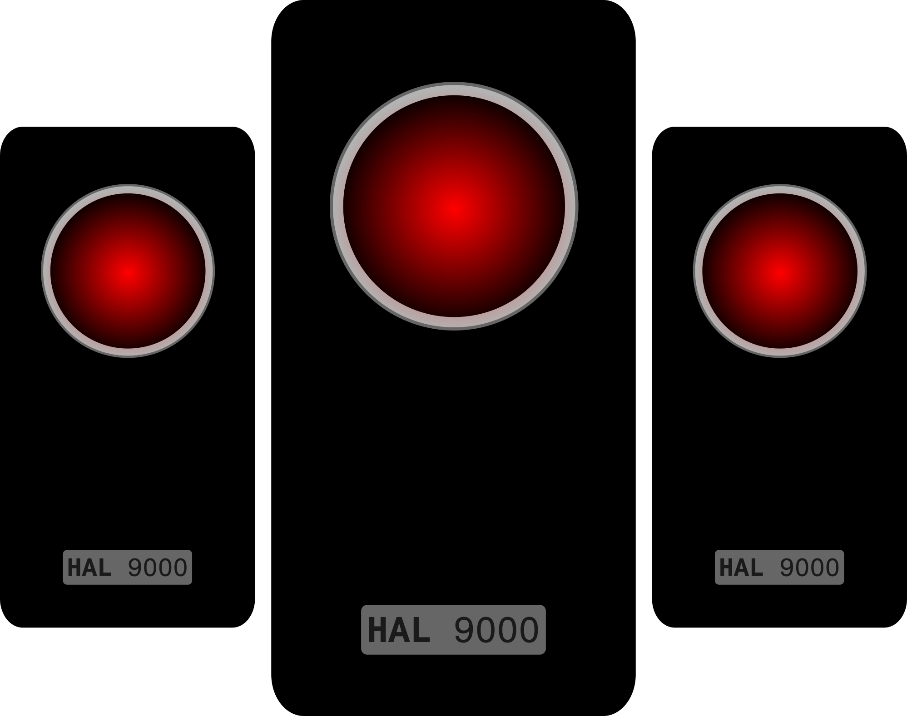
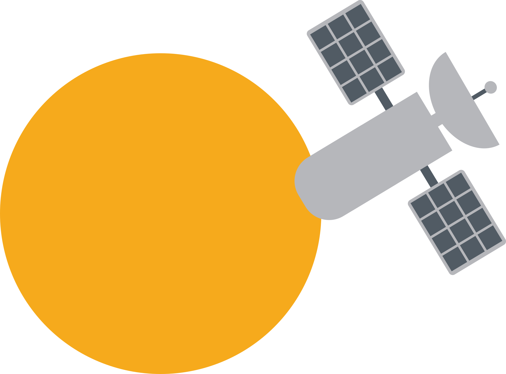
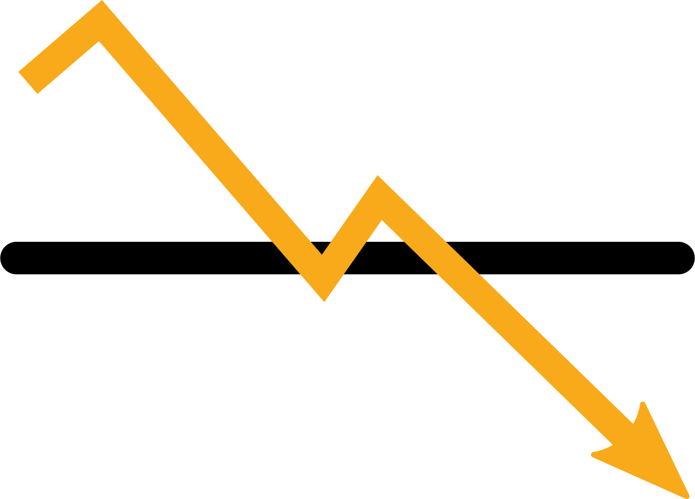
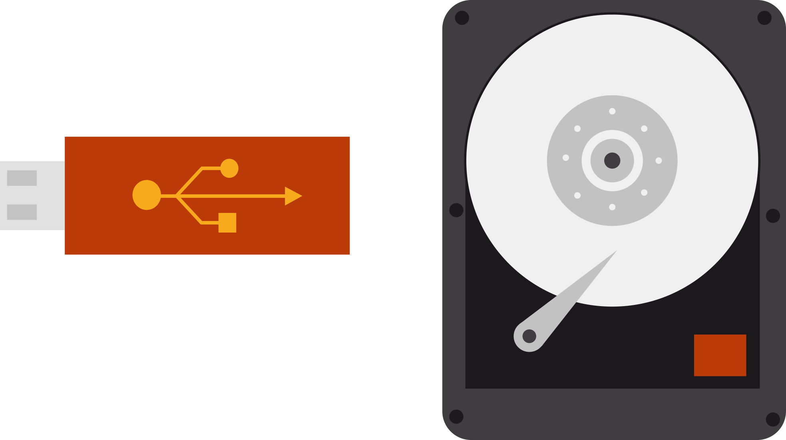

Could we live without it?
At 2015, worldwide Internet users are more than 3 billions. The Internet has become an essential and unavoidable part of our life. Nowadays, almost nothing gets done without it. However, could our blind dependence in it be a threat to ourselves? Would we be able to live without it?
Is it possible that somehow it may not be around in the near future? Most people spend their daily lives as if Internet has always been here and always will be. However, its success is not a proof of its endless permanence.
It would be unwise to think it will always be around.
The Internet suddenly disappears
The Internet is robust. It's not dependent upon a single machine or cable. It's a network made up of other computer networks. It spans the globe. Connections cross over continents, under oceans and through space via satellites. And as the Internet has grown, so has our dependence upon it.
The Internet is reliable. Data that travels around it takes always different paths: even if entire sections of the Internet were to go offline in the wake of disasters or attacks, other sections could remain functional.
To imagine the world without the Internet means first of all to imagine the really dangerous possible scenarios that could cause it to collapse.

#1: A DNS Attack
The Domain Name System is the hierarchical system for Internet services. The most important job of the DNS is the translation of the websites URL we use every day into the computer-readable numerical IP addresses that are used in order to connect to a website. The DNS is structured as a hierarchy of servers interconnected through the world. The father of the technology, Paul Mockapetris, has confirmed that a physical or virtual attack to the DNS structure would open to the attackers the possibility to step in between the communication between the users and the website, basically blocking the normal Internet functioning. “If you take over the box, you can tell users whatever you like in response to their DNS queries” says Mockapetris.
#2: A physical attack on the cables
The Internet is based on an infrastructure that exploits a complex system of cables undersea. A physical attack on it, meaning a cut of the cables, would lead to a total loss of data exchange. Take, for instance, the severing of three underwater optical cables in 2008, which led to widespread outages in India, Egypt, and other Middle Eastern countries. After an investigation, authorities attributed the damage to dropped anchors.
#3: Zombie networks attack
Untold numbers of enslaved PCs are waiting to do the bidding of shadowy hackers. Matt Sergeant of MessageLabs puts the size of the Storm botnet at between 5 and 10 million machines (though others peg the size of the network at much less.) Today, bots fill our inboxes with spam. But in the past, they’ve been used to take out companies and countries and to blackmail sites. In the end, it’s an arms race in which only one side has to play by the rules.
#4: A solar flare
The most possible option for the end of the Internet, though, does not come from human threats: it comes from outside. Space weather can have great impact on the global communication system and could potentially put the entire global connectivity at the mercy of space. We can be subject to a future massive solar flare just like we are subject to the sun’s rays. The most gigantic one, known as the Carrington Flare, took place in 1859. It crippled the telegraphic communication all across North America and Europe. Computer engineers and space physicists are well aware of what a solar flare the size of Carrington would do to today’s extremely vulnerable communication infrastructure. A major solar event could theoretically melt down the whole Internet. What earthquakes, bombs, and terrorism cannot do might be accomplished in moments by a solar corona.
Economic downfall
Turning off the Internet worldwide has huge consequences even from the first hours. E-commerce, e-mail, instant messages, and video calls become impossible, while calendars and shared web documents are now inaccessible. Productivity screeches to a halt, and almost everyone’s livelihoods freeze. Very few types of businesses would remain unaffected by the collapse of the Internet. The Internet has become pervasive in business. Developed countries would face severe economic crises as entire industry sectors would disappear. Huge corporations like Google and Amazon become instantly obsolete. The unemployment would be immediately unsustainable: Facebook alone has created 450k US jobs. Statistics show that the internet creates 2,6 jobs for every job it makes obsolete. It contributes to 2,3 trillion $ income to G-20 nations, equivalent to the entire GDP of Italy. When you extrapolate those numbers to all industries across the entire world, you'll see that commerce on the Internet is big business. If the Internet collapsed, multiple industries would experience an instant recession. There's no easy way to bounce back from a loss of trillions of dollars.
Loss of culture
Ironically, one important consequence of the shift to digital publishing is that it leads to a potential loss of knowledge.Curt Rice (2013)
Internet is not a bunch of wires and servers connecting people, but there is more to it than just that. The Internet has become humanity’s huge database that hosts human knowledge. In the last decades we have been gathering and centralized It follows that whatever harms the Internet would inevitably lead to the loss of human knowledge, in proportion much greater than the destruction of the Royal Library of Alexandria (391 AD).
Arrest of social and political changing
The fall of Berlin took 4 months: it took only one week for 90k Egyptians to organize a revolution and overthrow a 30 years of dictatorship.
Thanks to its omnipresence, the Internet has redefined the concept of power. People are empowered by it: Internet gives voices and spreads words.
Losing Internet dramatically stops the freedom of expression, the free exchange of information and slows down every political changing process.
#occupy is the most famous example of the new human way of organizing political change and demonstrations: the rallies in over 900 cities around the world are entirely organized through the Internet. Without, it is impossible to think of something like that.
No more electronic currency
Online banking is dead and the publicly traded companies are disintegrated: cash is again the only way to pay. This would create an incredible chaos: there would be riots and tumult around banks because of the scarce cash. Soon, people without jobs have to rethink currency. Crime goes up as people begin stealing out of desperation.
No more online storage
People travel everywhere with hard drives since is now impossible to send information through e-mail, or to store it in the cloud. The communication now has to rely on circles of telephones calls and exchange of physical memories, like twenty years ago.
A dramatic perspective
The World Wide Web as we know it was created only 25 years ago, but it is already very hard to imagine a daily life without it.
It is difficult to correctly predict what would happen if, for one of the viewed reasons or another more, the Internet was suddenly turned off.
What is undoubtedly sure, anyway, is that our life would change drammatically, on many levels. It would have catastrophic consequences on the worldwide economy,
from inflation in the currency to a sudden, unbearable unemployment rate, since the biggest companies in the world today are heavily supported by Internet technologies.
This would surely create social disorders and a great drop in the quality of living.
It would influence the political evolving of many countries, because, as many modern dictatorships already do, turning off internet is a way to obstruct the free spreading of information.
The circulation of information today is almost entirely Internet-based: 65% of people get their news online;
in one month of Facebook there are 30 Billion pieces of content shared, and in one minute of Twitter 100k tweets.
Even if, as Scott Cook has said, "We're still in the first minutes of the first day of the Internet revolution",
the Internet has become a tool so powerful that access to a computer has become a basic need for the economy, the education and the daily life in our society.